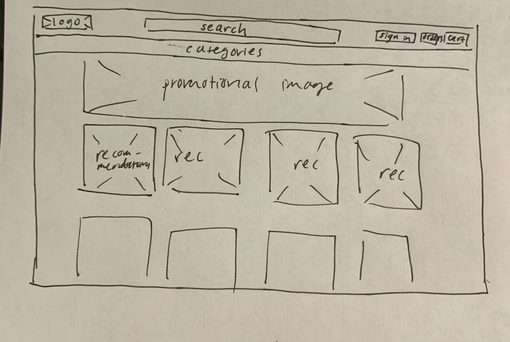
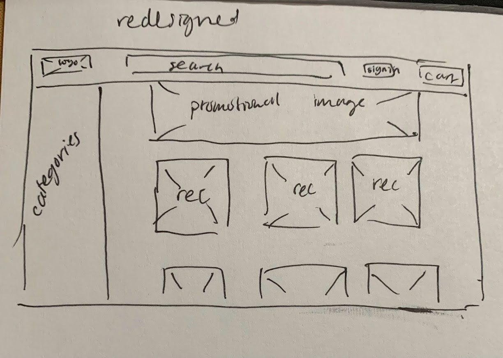

-
Using the favorite website you chose in homework 1, create a wireframe for one page of it using pen/paper, PowerPoint, or any your tool of choice. (use the 'img' tag!) Make sure to let us know what the name of your website is (Use the 'p' tag!)
Amazon Wireframe
 -
Try to improve the website you've chosen, and create a redesigned wireframe of one page for the same website using the principles of visual hierarchy that you learned from the article.
Redesigned Wireframe

-
What is the goal of the website? Who is it intended for? How does the design accomplish this? Write 2-3 sentences answering these questions. (Use the 'p' tag again!)
The goal of the website amazon.com is to sell people things, and to provide users with an online marketplace that delivers products directly to them. It is intended for people who for any reason cannot go to or find something in person at a store so they must have it delivered. The design accomplishes this by having a online shopping cart for purchases, headers to direct users towards the categories they are looking for, and recommendations for buyers.
-
Write 2-3 sentences about what problems your redesign addressed, and how it solved them.
My problem addressed the packed header for categories on Amazon's website, since there's a lot of words scrolling horizontally there that can be hard to read. I solved this by moving the category list to the left, somewhere users can scroll through and easily look at in one compact section.
NOTE: Make sure to include the wireframe images in the website and don't just put it in your assets folder!
Your wireframes should look something like this: